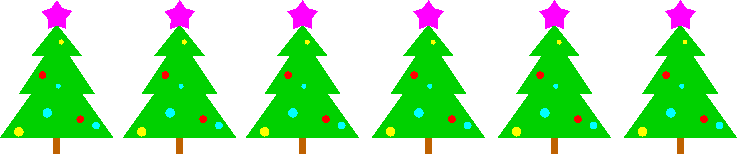

2011-2012

Kerstmis is traditioneel de tijd van kerstcadeautjes en kerstverhalen. Bijna alle kerstverhalen hebben veel gemeenschappelijks: het is winter, het sneeuwt en er zijn arme mensen op straat.
Kerstverhalen komen in heelder bundels, zoals bijvoorbeeld A Budget of Christmas Tales by Charles Dickens and Others, op Project Gutenberg. Om het gemakkelijk te maken krijg je elk verhaal in een apart bestand:
De gemakkelijkste manier om gemeenschappelijke deelstrings te vinden is de volgende. Steek je strings in een suffixboom met elk een verschillend afsluitteken (zorg er wel voor dat de gebruikte afsluittekens niet in een andere string voorkomen. In de kerstverhalen zit er geen enkel karakter met rangnummer -60 tot 0, grenzen inbegrepen) en bekijk een willekeurige (expliciete of impliciete) knoop. Als ergens onder de knoop een blad zit met afsluitteken x, dan zit de string aangegeven door de knoop in het bijbehorende bestand.
Bepaal de langste deelstring die in alle mogelijke verhalen zit. Bepaal ook voor elk paar verhalen de langste gemeenschappelijke deelstring. (dit zijn dus 190 deelstrings).
Stel de gelijkenisgraaf op. Dit is een dichte ongerichte gewogen graaf waarbij het gewicht tussen verhaal i en verhaal j gegeven wordt door 1/lengte(lgd(i,j)).
Het is bekend dat elke schrijver een specifiek woordgebruik heeft en sommige standaardfrazen veel gebruikt. We kunnen ervan uitgaan dat daardoor de kans op een lange lgd groter wordt. Drie van de verhalen zijn geschreven door Charles Dickens. Valt dit op aan de lgd's? Merk op dat de lgd van twee Dickensverhalen al minstens 15 karakters lang is omdat de naam van de auteur in de tekst vermeld staat.